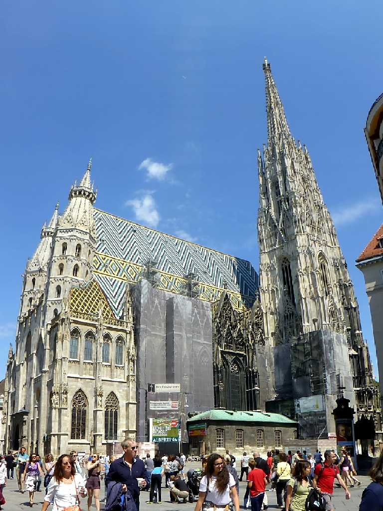
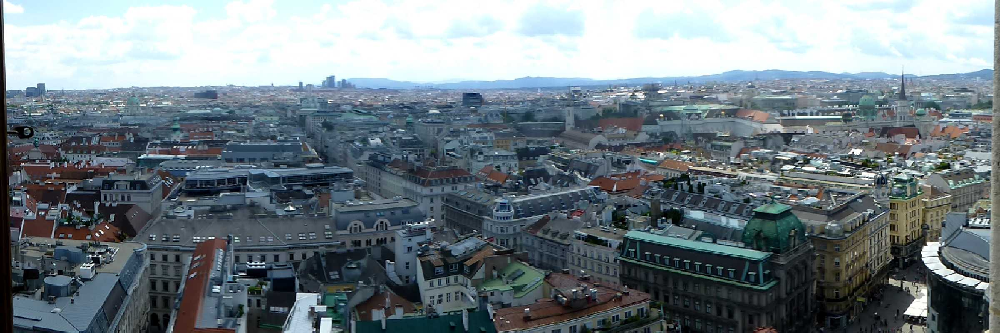
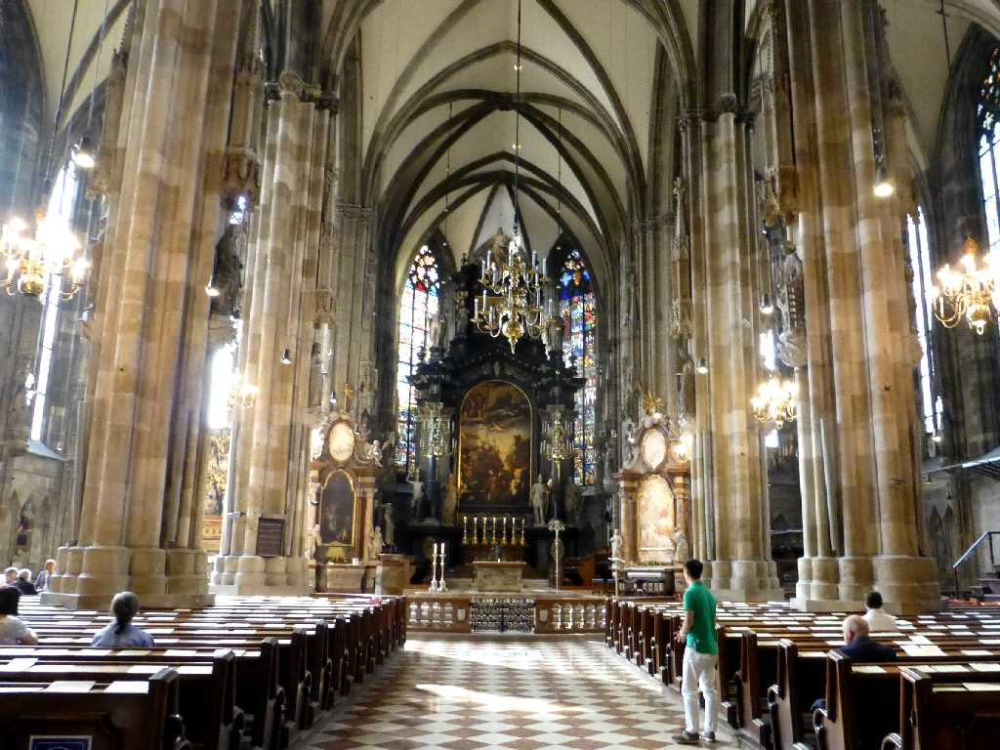
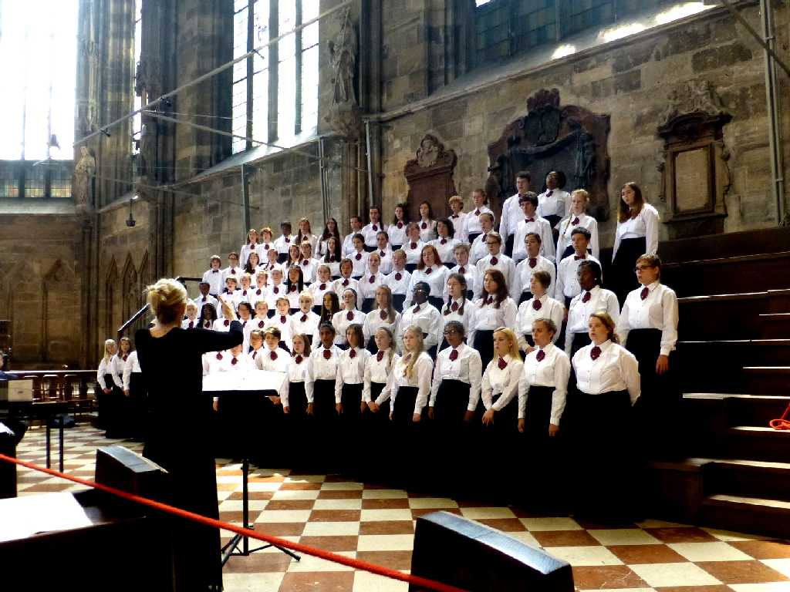
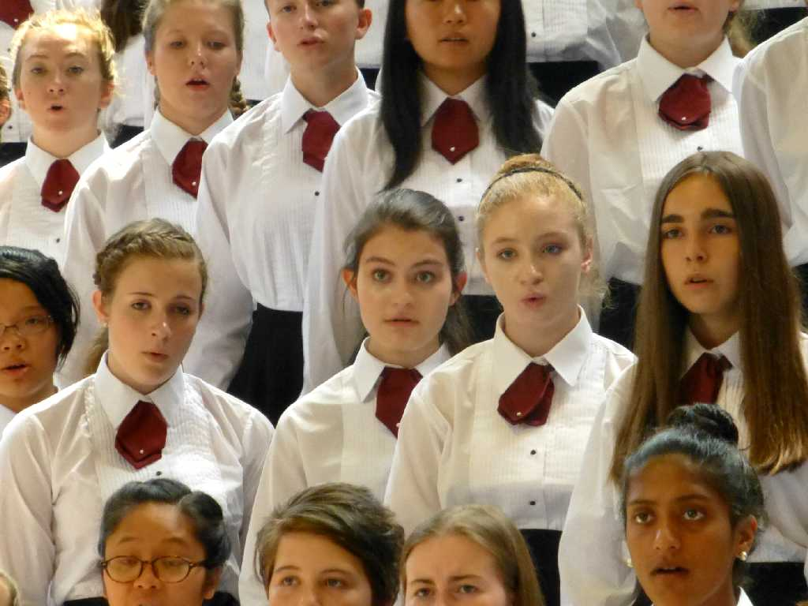
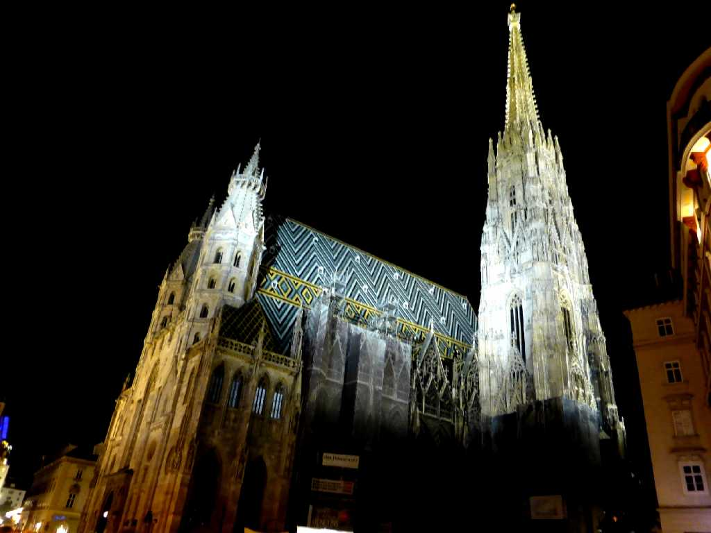
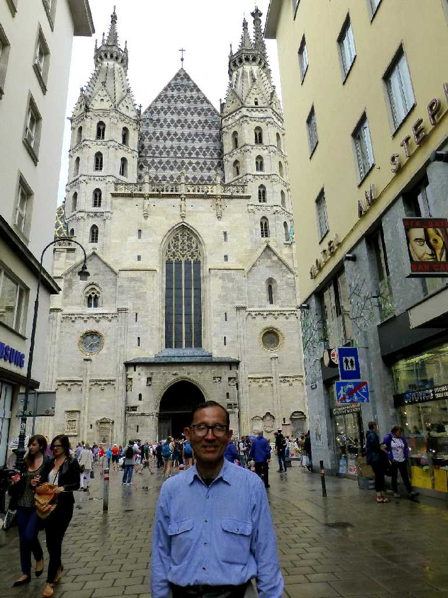

Stephansdom Wien
１３５９年に創られたシュテファン大聖堂はハプスブルク家歴代君主の墓所でありウィーンのシンボルとなっている

Südturm Stephansdom
高さ１０７ｍの南塔は世界第三位で３４３段登るとウイーン市街地の眺めが良い

Altar Stephansdom

Chorraum Stephansdom
日曜ミサではミサ曲が合唱されていた

Chorraum Stephansdom

Nacht Stephansdom

June 27 2015 Stephansdom